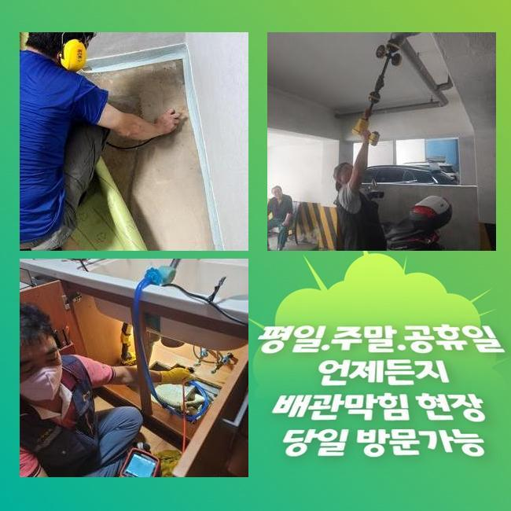
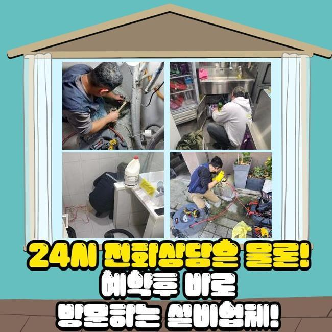
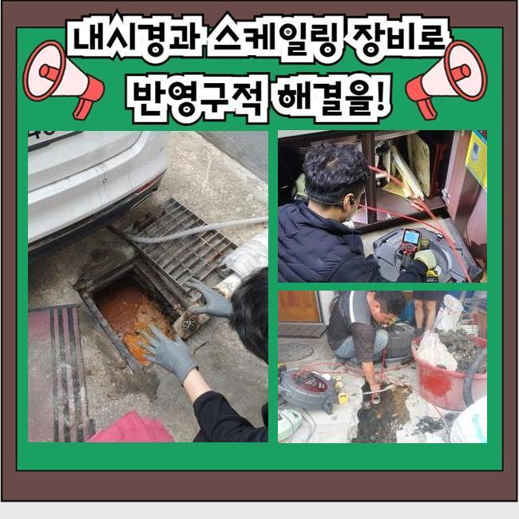
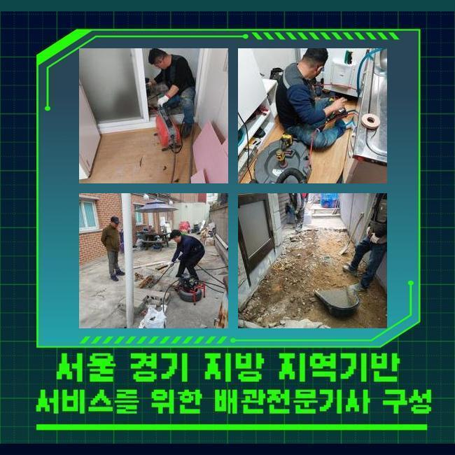
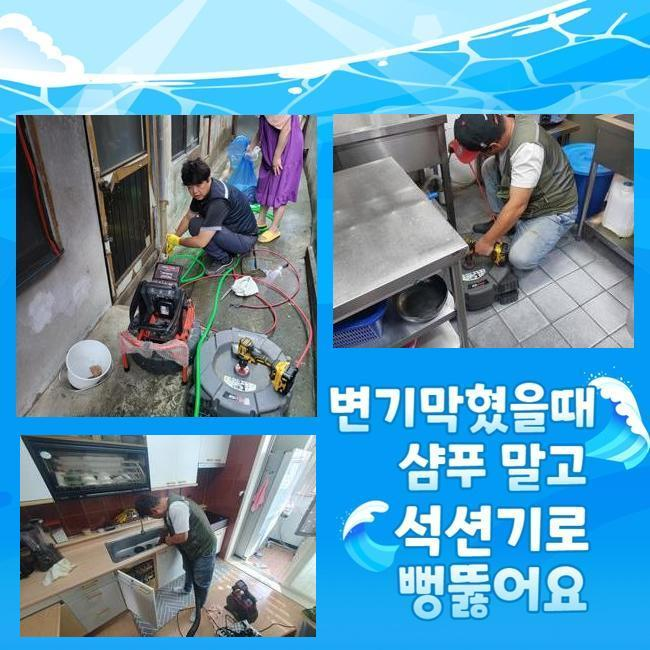
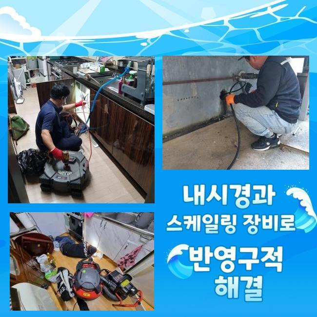

🏠 중앙동 하수구 막힘 안산 호수동 화장실 역류 고압세척 해결 업체
안산 중앙동 변기막힘 전문 시공 후기

📋 작업 개요
- 위치: 안산 중앙동, 중앙동, 안산
- 서비스 유형: 변기막힘, 하수구막힘, 배관막힘, 맨홀막힘, 누수수리, 역류해결, 뚫는업체, 배관청소, 고압세척, 설비공사
- 작업 일시: 2025. 8. 26. 10:40
- 업체명: 하수구수사대 (010-5615-2118)
🔍 문제 상황
안산 중앙동대변기역류 신길동 맨홀막힘 해결방법
하수구의 마비가 일어나는 사유는 굉장히 다양한데 몇 개를 꼽자면 기름슬러지와 석회물질이 주된 원인이라 선정할 수 있어요
인테리어 작업을 마치고 하수관의 봉인이나 역류가 일어나면 시멘트 혹은 석조 등을 원인으로 가늠을 해보는 게 유력할 수 있습니다
얼마 전 고쳐드린 하수관도 작업을 하면서 다수의 오물들을 배관 내에서 목격하게 되었습니다
일반 주택에서 하수 고장이 시작되고 처치되지 못하면 밑층까지 누수 문제가 확산될 수 있으니 한시라도 빨리 근본원인을 빼내야 합니다
거기다 상가 건물이면 금전적인 부분과 이어진 부분이기 때문에 속도와 정확도를 모두 높인 조치를 취해야 합니다
이번에 소개드릴 하수구 설치장소는 앞서 작업을 완료한 인테리어를 한 다음에 하수구 기능이 마비돼서 영업을 못하셨다고 합니다
보통 인테리어시공이 있은 후부터 시멘트가루 등의 가루를 따로 쓸어서 없애지 않고 관로로 흘려보내면 이게 막힘이 되곤 합니다
수많은 사유들로 배관이 고장나기도 하므로 경우의 수를 넓게 열어두고 필요한 장비들을 빠짐없이 챙겨서 주소지에 도착했습니다
내부로 진입해서 주변부를 싹 둘러봤는데 수전이 연결된 배수구의 장애가 발생한 것 같더라고요
청소기 역할의 석션을 돌려서 인근 오물들을 없애주고 내부에 차오른 하수 모조리 없앴습니다
단단한 것이 막혀있어서 석션만 돌려서는 불충분한 상황이었지만 다음 작업을 위해서라도 내부관측을 방해하는 더러운 오염수를 모두 없애버려야 했습니다

🔎 원인 분석
💡 전문가 진단: 정밀 진단 장비를 사용하여 슬러지의 고착 여부를 판명하고 타격/세척 작업을 실시했습니다.
하수관 기능을 복원하려면 종합적인 장비의 사용이 필히 동원되어야 합니다
우선은 흡입을 위한 석션과 샤프트는 필수 옵션이며 배관 안을 확실하게 체크하려면 내시경도 돌려보아야 합니다
직경이 크다거나 깊은 위치에 있다면 힘이 뛰어난 고압청소기까지 추가할 수 있어서 항상 이것도 꼭 챙기고 있습니다
요즘은 여러 차원의 장치들이 점차 업그레이드가 되니 하수관 수선과정이 그리 곤란하지 않아요
많고 깊은 기술력이 미흡하면 효율적으로 장치를 쓰기 힘들 수 있어요
명확한 원인 분석 없이 장비의 힘만 믿고 사용하면 하수구의 파손까지 나아갈 수 있으니 전용 카메라를 이용해서 배관 속을 투명하게 밝혀보고 안전하게 본 청소작업을 실시하는 게 좋습니다
오수를 없앤 다음에 배관 내시경을 켜서 배관 내측으로 내려보내서 무엇이 문제인지 확인해봤습니다
이리저리 자리를 옮겨가며 확인해보니 진흙같이 보이는 물질과 타일 같은 덩어리들이 한껏 차올라서 정상적인 물의 이동성을 저해한다는 걸 인지할 수 있었습니다
인테리어를 맡기시거나 활동을 했다면 관로로 분진이 흘러가지 않게 봉투에 따로 폐기하면서 청소를 담당해야 합니다
내시경 화면을 체크하니 하얀색 덩어리가 보였는데 시공을 하는 과정에서 백시멘트 가루가 안으로 떨어졌고 물과 만나서 경화가 된 것으로 두눈으로 목격할 수 있었습니다
처리가 되지 않은 일부의 백시멘트가 유입된 듯 했어요
이물질이 켜켜이 쌓여있는 상황 탓에 막힘이 발생한겁니다

🔧 작업 과정
지속적으로 내시경으로 안을 주시하며 분쇄 업무를 신중하게 해드렸습니다
샤프트를 넣어서 이물질들과 기름때를 절단해서 빼올려야겠다고 정했는데요
갈아낸 찌꺼기를 석션기로 흡입 처리를 했더니 덩어리들도 나왔습니다
반복적으로 제거작업을 임했건만 말라붙은 시멘트가 견고하게 붙어있다보니 배수로를 새걸로 가는 작업까지 들어갈 수 있는 까다로운 상황임을 감지할 수 있었네요
샤프트만 써서는 만족스러운 성과를 내지 못할 듯 하여 계속 무리하게 작업 때문에 배관이 훼손될 것 같더라고요
바닥 쪽 타일을 걷어내서 관로의 상태를 점검하고 맞춤으로 작업해야 할 것 같았습니다
다시 매끄럽게 복구해드리겠다고 전해드리고 굴착을 시작했어요
카메라로 보았 듯 시멘트 덩어리가 가득 차올라서 관로가 중단된 것 같더라고요
바닥부 공사 이후에 쓸려간 시멘트 분진이 거대하게 성장했던 것입니다
시멘트라는 재료는 양생이 빠른 편이라서 가운데를 막아버리는 이런 문제점들이 흔히 보이곤 합니다
잘라낸 배관을 깨끗한 파이프를 가져와 접붙였습니다
배관을 자르는 시점에도 허술하지 않고 깔끔하게 잘려나가도록 해야하며 연결부에도 틈이 조성되지 않도록 접합시킵니다
배관 연결부위를 완벽하게 신경쓰지 못한다면 붙은 면이 갈라진다거나 사이가 멀어지다가 누수로 업그레이드 될 때가 있어요
배관이 흔들흔들하거나 분해되지 않도록 신경 써서 관로를 새 자재로 바꿔드렸습니다
샤프트로 분해한 찌꺼기들이 한가득 고였습니다
제각각 다른 오염원들이 내측에 고이고 또 고여있었으니 물 방출이 안 된겁니다
물이 잘 내려가는가 단숨에 대량의 물을 아래로 인위적으로 붓는 방식으로 통수 성능 검사를 해봤어요
더러운 물의 역류같은 지독스러운 일 없이 나아진 것을 확인하고 미장 업무에 만전을 기했습니다
굴착한 곳에 시멘트 반죽을 넣어서 배관이 움직이지 못하게 하고 울퉁불퉁한 면이 없도록 디테일도 신경써서 작업합니다


✅ 작업 완료
추가로 백시멘트로 방수 레이어를 쌓아주고 원래대로 타일을 붙여주면 끝입니다
굴착 작업으로 하수도를 정비하고나서 작업장소였던 바닥에 방수기능은 넣어주지 못하면 밑집에도 누수가 악영향을 줄 수 있으니 추후 하자가 발생하지 않도록 꼼꼼히 체크해드리고 있습니다
견고하게 양생되기까지 만지거나 활용하는 것을 피하시라고 말씀드리고 어려움을 겪던 하수구 시공을 끝낼 수 있게 되었습니다
하수구가 막히는 부위는 다양한데 이번처럼 욕실 쪽 하수 장애도 자주 나타나서 의뢰를 다수 받고 있습니다
시간 관계없이 출장을 가므로 현재 상태만 간략히 전달주신다면 부실한 하수구 성능을 회복하고 싹 뚫어드릴게요!




⚠️ 베란다 누수 및 방수 관리 방법
- ✅ 비가 많이 올 때 창틀 주변이나 아래층 천장에 얼룩이 생기는지 정기적으로 확인해 보세요.
- ✅ 우수관 주변 실리콘 마감이 들뜨거나 깨진 틈새가 있는지 손상 여부를 수시로 체크하세요.
- ✅ 베란다 바닥 타일의 줄눈(메지)이 소실되면 그 틈으로 물이 침투하여 누수가 유발됩니다.
- ✅ 누수 의심 증상 발견 시 방치하면 아래층 손실이 커지므로 즉시 전문가의 진단을 받으십시오.
💡 핵심 정리
- 확실한 장비 작업(내시경 점검 및 샤프트 스케일링)으로 원인을 뿌리 뽑습니다.
- 작업 후 1년 이내에 동일한 부위 재발 시 100% 무상 A/S 서비스를 보장합니다.
- 서울 · 경기 · 인천 전 지역에 24시간 언제든 긴급 출동할 수 있도록 항시 대기 중입니다.
❓ 자주 묻는 질문 (FAQ)
🚨 안산 중앙동 변기막힘 문제로 고민이신가요?
정확한 원인 진단과 확실한 시공으로 재발 없는 해결을 약속드립니다.
24시간 긴급 출동 | 서울 · 경기 · 인천 전지역 | 1년 내 재발 시 무상 A/S